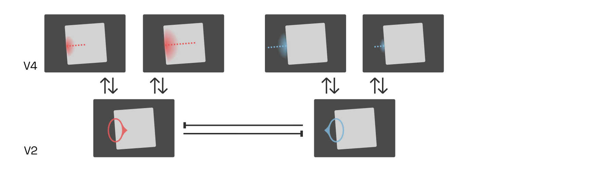
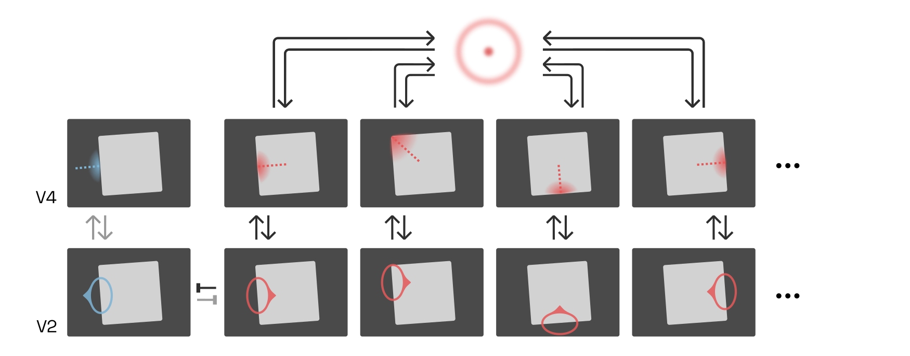

YinYangFit ☯
Modelling for automatic letterfitting, inspired by neuroscience
Acknowledgements
This research would not have been possible without funding from Google, for which I have Dave Crossland to thank in particular. I am grateful also to Simon Cozens and others for many valuable discussions.
Abstract
Adjusting letter distances to be visually pleasing is a challenging and time-consuming task. As existing tools are too primitive to reliably handle the infinite variety of typefaces, designers have to mostly rely on their intuitive judgment. I review how letterfitting fits into the current scientific understanding of how letters and words are perceived in the brain, and present approximate models that can be fitted to to existing, hand-fitted fonts using backpropagation.
Target audience
Designers and developers with an interest in neuroaesthetics.
Epistemic status: tentative
This article is based on a survey of hundreds of peer-reviewed articles, and in line with mainstream ideas in vision and neuroscience research. It is the product of nearly a year of work and countless revisions. That said, even the in-vivo evidence for the suggested models is often indirect or circumstantial. Nothing in this article should be construed as final. I welcome corrections!
Introduction: form follows function, beauty follows legibility
Letterfitting refers to the process of adjusting the distances between pairs of 
Red vertical bars show side bearings, blue vertical bar shows a negative kern. It’s often referred to as “spacing and kerning”, because pair distances are the sum of fixed amounts of space around every letter (so-called side bearings) and additional adjustment values for individual pairs (so-called kerns). Quality fonts often contain thousands of hand-kerned pairs that undergo weeks of testing and refinement.
Some would say that a good fit is simply the result of the designer’s personal intuition for
These ideas aren’t wrong, but they’re underpowered. None have led to automated letterfitting
So let’s start from square one: with a solid model of how reading works in the brain. By reframing letterfitting as the pursuit of optimal legibility (and not of beauty), we can climb on the giant shoulders of generations of vision researchers and begin to understand what vague ideas like “black-white balance” actually mean in our visual cortex. Our working hypothesis: well-fitted text is text that most effectively activates the neural circuitry that allows us to read letters and words, and therefore maximizes reading speed.
The connection between type design and legibility is self-evident and
Letterfitting as perceptual grouping
Letterfitting means making a compromise between the legibility of letters and the integrity of words. Intuitively, moving letters further apart makes it easier to recognize them:

Letter identifiability is important. But to form a word, letters need to stay close enough to allow our visual system to perceive them as a group.
Perceptual grouping is a complicated process. The neurons that group visual signals into coherent objects operate at different scales, and they compete with one another. When one pair of letters is tighter than the next, perceptual grouping will bind the first pair tightly together, at the expense of the second. Consider the following example:

In the first column, the well-fitted word is perceptually grouped into a single object. In the middle column, the loosely fitted word is still perceived as an object, but it has to compete with the perception of its constituent letters. Finally, the poorly fitted word in the last column triggers the perception of two separate objects, namely the single letter c and a pair at.
The primary objective of a good fit is to avoid the latter situation. When some pairs group more strongly than others, words are fragmented into separate perceptual objects, which makes reading difficult. The secondary objective of a good fit is to make the fit as tight as possible without hampering the identifiability of each letter.
Perceptual grouping networks are a fundamental piece of our vision circuitry, and not exclusive to reading. Still, knowledge about letter shapes can affect fitting decisions. We will therefore review the latest scientific models of both vision and reading.
Our brain’s visual processing system is divided into multiple regions, each of which represents the incoming visual imagery at a different level of abstraction. Anything we see—landscapes, patterns, text—activates neurons in each one of these brain areas. While neurons in the lower-level areas respond to concrete details in the visual input, neurons in higher-level areas respond to the presence of particular configurations of such details. This allows us to simultaneously experience the raw visual qualia and comprehend what we see on a more abstract level.
Whether we are looking at an apple (and recognizing it as such), a tree (and recognizing it as such), or a word (and reading it), the same visual circuitry is at work—with the exception that the highest-level neurons responsible for recognizing apples and trees are located in a different brain area than those dedicated to recognizing letters and words.
Many readers may have had some exposure, however superficial, to the concept of deep convolutional networks. It is dangerously tempting to conceptualize the architecture of the visual cortex as such a network: raw visual input enters at the bottom, undergoes processing through multiple layers, then comes out the top as a neat classification of a word. But perception, and perceptual grouping in particular, is a dynamic process. It is not a computation with input and output, but a dance of electrical activity that evolves through
With that in mind, let’s go on a brief tour through our visual system.
From the retina to the primary visual cortex
Sensory input from the eye travels up the optic nerve, through the lateral geniculate nucleus (LGN) on the brain’s thalamus, to the visual cortex at the very back of the

The first phalanx of cells—the primary visual cortex, or V1—performs what amounts to a band-filtered wavelet decomposition. Each neuron here is
These neurons are called simple cells, and we can easily predict their response to a given input. For instance, when we see an single uppercase I on a page, some simple cells will respond strongly and others not at all, depending on the tuning and location of their receptive
In software models, the filtering operation performed by simple cells is typically implemented as Fourier-domain multiplication with a bank of complex band-pass filters G(s, o) (where s is the frequency scale and o the
S_\mathrm{V1}(x, y, s, o) = \mathcal{F}^{-1}(\mathcal{F}(I(x, y)) \mathcal{F}(G(s, o)))

For instance, to retrieve the activation of representative simple cells at phases 0°, 90°, 180° and 270°, we could half-wave-rectify as follows:
\begin{aligned} S_{\mathrm{V1, 0\degree}}(x, y, s, o) &= |\mathrm{Re}(S_1(x, y, s, o)| \\ S_{\mathrm{V1, 90\degree}}(x, y, s, o) &= |\mathrm{Im}(S_1(x, y, s, o)| \\ S_{\mathrm{V1, 180\degree}}(x, y, s, o) &= |-\mathrm{Re}(S_1(x, y, s, o)| \\ S_{\mathrm{V1, 270\degree}}(x, y, s, o) &= |-\mathrm{Im}(S_1(x, y, s, o)| \\ \end{aligned}
This operation yields responses like these:

As it turns out, some V1 neurons are less sensitive to phase than others, and some may even respond equally to both lines and edges, as long as scale and orientation match their tuning. Those cells are called complex cells
To be clear, this does not mean that the signals from simple cells are lost or discarded. Just like the signals from colour-detecting cells in the so-called blob regions of V1, which are not further discussed here, their outputs do contribute both to our experience of vision and to the activity of higher-level brain regions. For reading (and thus letterfitting) purposes, however, we will focus on the responses of complex cells.
Traditionally, complex cells were thought to sum the outputs of nearby simple cells of equal scale and orientation. This is now known to be a gross oversimplification. In software, a similar approach is nevertheless taken to approximate the output of complex cells C_{\mathrm{V1}}, namely a simple computation of the absolute magnitude of the complex tensor:
C_\mathrm{V1}(x, y, s, o) = |S_\mathrm{V1}(x, y, s, o)|^2
This is often called the local energy. The squaring operation shown here is often used to approximate the nonlinear behaviour of complex cells in particular.
Applying this phase-squashing to the above images yields:

 Solid line: hyperbolic ratio curve, a.k.a. Hill function or Naka-Rushton function. Dotted line: monotonic polynomial (e.g. x^2). Of course, the squaring nonlinearity is rather unrealistic. Increase inputs enough, and the firing rate of real cells will level off. A popular model for this is the hyperbolic ratio sigmoid
Solid line: hyperbolic ratio curve, a.k.a. Hill function or Naka-Rushton function. Dotted line: monotonic polynomial (e.g. x^2). Of course, the squaring nonlinearity is rather unrealistic. Increase inputs enough, and the firing rate of real cells will level off. A popular model for this is the hyperbolic ratio sigmoid
y = \frac{fx^k}{\beta^k + x^k}
The f scales the curve vertically, k makes the kink steeper, and \beta shifts the threshold to the right. Consider how the numerator increases the firing rate, and the denominator decreases it. For relatively small values of x, \beta^k dominates the denominator, yielding a scaled-down version of fx^k (values of about 2 or 3 are common for k, in agreement with the square often used). But once x^k gets large enough, \beta^k pales in comparison, and we are left approaching f
A common architectural pattern in the brain is lateral inhibition, in which neurons within a cortical area suppress their neighbours in proportion to their own firing rate. Locally, this allows the most active neuron to suppress its neighbours more than those neighbours are able to suppress it in return. Lateral inhibition thus sharpens peaks and flattens valleys in the activity landscape; it is a simple and effective way to boost salient signals relative to weaker ones that inevitably arise from the correlations between similarly tuned convolution filters. In particular, lateral inhibition sharpens the orientation and frequency-scale signals we receive from
Because lateral inhibition is a recurrent process that takes time to reach a steady state, it is most accurately modelled using a system of coupled differential equations which describe the time dependence of each neuron’s firing rate on its neighbours. Conveniently, however, the steady state can also be approximated directly using our hyperbolic ratio model, by simply sneaking the neighbouring neurons’ activities into the
y_i = \frac{fx_i^k}{\beta^k + \sum_j w_j x_j^k}
This approximation is called divisive normalization. One can find many variations on the above formula in the literature: extra constants, extra square roots in the denominator, extra rectifiers, etc., but the core idea is always the same.
This raises the challenge of determining the right values for w_j, i.e. modelling the inhibitive strengths of neighbourly connections. Researchers have collected
 Contrast sensitivity function. The vertical gradient in contrast is uniform across the image, but we most easily perceive the mid-frequency gratings even at lower contrasts. Note that the red line, shown here only for illustrative purposes, may not match the contrast sensitivity function you experience at your current viewing distance and screen settings. Another aspect of vision that appears to manifest quite early—the optical limitations of our eye notwithstanding—is our specific sensitivity to spatial frequencies. Humans respond particularly well to angular frequencies of about 2–5 cycles per degree, and unsurprisingly this translates to reading speed as well, especially under low-contrast
Contrast sensitivity function. The vertical gradient in contrast is uniform across the image, but we most easily perceive the mid-frequency gratings even at lower contrasts. Note that the red line, shown here only for illustrative purposes, may not match the contrast sensitivity function you experience at your current viewing distance and screen settings. Another aspect of vision that appears to manifest quite early—the optical limitations of our eye notwithstanding—is our specific sensitivity to spatial frequencies. Humans respond particularly well to angular frequencies of about 2–5 cycles per degree, and unsurprisingly this translates to reading speed as well, especially under low-contrast
Area V2, Portilla-Simoncelli texture correlations, and crowding effects
Area V1 deconstructed the incoming imagery into thousands of edge and line fragments. Area V2 helps find patterns in those signals, patterns that form the basis for the perceptual grouping effect we are interested in.
Each neuron in V2 takes its input from a combinations of neurons in  V2 cells take their input from a nearby V1 cells, correlating receptive fields across dimensions of space, simpleness/complexity, orientation, and spatial frequency scale.
V2 cells take their input from a nearby V1 cells, correlating receptive fields across dimensions of space, simpleness/complexity, orientation, and spatial frequency scale.
Presumably, the ability to respond to correlations of inputs from V1 is conferred to V2 neurons by their nonlinear activation curve. Consider a toy example in which two V1 neurons each fire with rates between 0 and 1.0. Then a V2 neuron with the following activation curve would fire only if both inputs are sufficiently active, summing to at least 1.5, thereby implementing correlation:

Intuitively, many of these correlations may appear to be meaningless. As it turns out, however, the local ensemble of many of such correlations effectively describes the texture of the scene. In a now famous experiment, researchers systematically computed a few dozen of such correlations for a given scene. They then synthesized new images, by tweaking random pixels until local averages of their V2 correlations matched the ones in the original

As evident here, a mere approximation of these averaged image statistics measured by V2 is enough to simulate, with eerie fidelity, how we perceive our visual periphery. This is no coincidence: after all, higher-level areas (here, V4) precisely respond to particular configurations of such V2 neurons, so synthesizing images which evoke similar V2 activations will also result in similar higher-level perceptions, even if the actual input signals are quite
That V2 neurons so effectively describe local image statistics presents us with a first opportunity to reify a heretofore vague concept into something concrete and computable: namely, that “rhythm” or “balance” between black and white translates to correlations between V1 responses. And indeed, this appears to be possible:

We may be tempted to exploit this effect to build a simple letterfitting strategy in which we iteratively adjust pair distances in an image of text until a chosen set of V2 responses is nice and uniform across the entire image. And indeed, I believe this would be the most effective and biologically faithful approach to achieve a perfectly even typographic “colour”. However, it would likely create too even of a colour, at the expense of the readability of letters and words. There simply is no getting around understanding the grouping mechanisms that rule our perception of shapes.
Still, V2 statistics matter. Not only might they serve as a very useful tool to optimize visual consistency during the type design process itself—a topic for another research project!—but they are intimately related to perceptual grouping through a phenomenon called crowding, which we will address later.
Contour integration and V1 feedback
Not all V2 neurons respond to peculiar V1 correlations expressing elements of texture. Some pick up on more obviously salient signals, such as continuous edges and lines. Experiments suggest that they do so by responding to V1 complex cells that co-align:

This allows these V2 cells to detect continous contours, even if these contours are curved or
 Typical contour integration test image. Adapted from Roudaia et al., 2013. Having thus detected a piece of contour, the V2 neuron now sends an amplifying signal to all of its V1 inputs, which in turn increases the input to the V2 cell itself, creating a positive feedback loop between V1 and V2. Crucially, however, this feedback only amplifies neurons that are already firing; it does not induce activity in other inputs (and may even suppress
Typical contour integration test image. Adapted from Roudaia et al., 2013. Having thus detected a piece of contour, the V2 neuron now sends an amplifying signal to all of its V1 inputs, which in turn increases the input to the V2 cell itself, creating a positive feedback loop between V1 and V2. Crucially, however, this feedback only amplifies neurons that are already firing; it does not induce activity in other inputs (and may even suppress
This kind of feedback loop is not only a key ingredient in the perceptual grouping mechanism we will discuss below but, as we will see, a primitive grouping mechanism of its own.
V4 and higher-level areas
The next area of the visual cortex, area
Just as in V2, two categories of neurons are particularly noteworthy: texture detectors and contour

This is significant in practice, because it allows for easy shape detection and, as we will see, perceptual grouping. For instance, consider how the following population of neurons might respond to the corners and sides of a large square. A higher-level square-detecting neuron, presumably located in the inferotemporal cortex, would be easily able to integrate all of these colocated responses to report a square shape:
Thanks to the robustness afforded by the integration mechanisms in V2, V4, and higher-level areas, we can now explain how we can simultaneously detect the presence of a square and yet not see it, in this classic optical

Even though the sides of the square are only weakly detected, the sum total of activations is enough to allow us to perceive the presence of a square although V1 detects no edges at the square’s sides at all.
Grouping via border ownership
Navigating our natural environment requires us to make sense of groups of contours as coherent objects in three-dimensional space, even though our visual system only has access to a two-dimensional projection. As the illusory square above demonstrates, our vision system manages to do this even if in the absence of binocular disparity cues, and despite interrupted contours and occluded objects. To accomplish this, V4 signals that likely constitute an object need to prevail over others that do not. For instance, a square not only excites contour detectors centered inside of it (red), but also on the outside (blue):
Once again, a feedback loop saves the day: the internal (red) neurons will almost immediately fire more rapidly, thanks to amplifying recurrent signals from the higher-level square detector. The external (blue) neurons do not constitute a coherent shape, therefore receive such feedback and fire much more slowly as a result:
This basic architectural pattern already explains quite well how contiguous, or nearly contiguous, objects rise to salience while other signals wane. But we have yet to discuss what happens when multiple objects get involved.
Researchers have discovered that the above feedback loop extends downwards to a class of V2 neurons called border ownership cells or B-cells. B-cells, like the V2 contour integration cells already discussed, detect the presence of edges based on V1 complex cells. While they are agnostic to the edge’s contrast polarity, B-cells fire only if they are on one particular side of an object. For instance, the B-cell whose receptive field is marked in red below only detects edges on the left side of objects, as indicated by the small protrusion pointing toward the

The B-cell only sees an edge. It cannot know which part of the object it is on; its receptive field is much too small. So its activity must be gated by a neuron which does: namely, one of our higher-level V4

There is an entire population of B-cells, distributed across V2’s retinotopy. For instance, consider a right-side B-cell (blue below) neighbouring our left-side B-cell. Both B-cells are engaged in feedback loops with V4 neurons while simultaneously inhibiting local competitors—i.e., each other—in proportion to their own activation strength (recall our discussion of divisive normalization as an approximation of lateral inhibition in V1):

But as we know, the internal V4 contour detector (red) is already firing more strongly than the external one (blue), thanks to its participation in a coherent object. This enhances the activity of the left-side (red) B-cell, which suppresses its competitor, which in turn further reduces the input to the external (blue) V4 cell. After some tens of milliseconds, the percept of the square as its own object is solidly established.

Having introduced the concept of B-cells, we can now finally discuss what happens when multiple objects get involved—we are still talking about letterfitting, after all!
Consider the following situation, and make a guess whether at the circled location, left-side or right-side B-cells would win out:

Although technically the dark shape is a closed, contiguous shape and therefore on par with the light circle, it is intuitively obvious that the circle dominates, and even appears to lie above the black shape. As a result, we can confidently predict that humans will perceive the circled region as the left side of the circle, and not as the right side of the dark area.
As it turns out, the vast majority (although not all) of the object-centered contour detectors in V4 are either straight or convex in shape, with various degrees of curvature. This has the profound consequence that convex shapes tend to outcompete concave shapes in our perception.
Meanwhile, although the hypothetical square detector served us well in the examples above, we actually do not know the population of shape detectors in our inferotemporal cortex.
In simulations of perceptual grouping, it is therefore practical not to think directly about V4 contours and shape detectors. Instead, a popular approach is to work with a population of representative (if fictitious) “grouping cells” or G-cells, each of which receives input from an annulus of inward-directed

Given that the V4 contour detectors chiefly pick up convex curvatures at some eccentricity, this is really quite a reasonable model for whatever may truly be going on in our posterior inferotemporal areas.
In the square below, a single large-scale G cell centered on the shape is excited by inward-directed B-cells on all four sides (red). Inside the corners, a series of smaller-scale G cells receive input from two sides (purple, blue).

In many other locations, G-cells are activated by only a few B-cells on just one side. This is not enough to evoke a strong activation. In addition, we may assume that G-cells compete via local inhibition, such that those cells receiving inputs from more (and from nearer) B-cells dominate.
Once B-cells and G-cells have settled into an equilibrium, the locus of peak responses of G-cells across different scales neatly represents the skeleton of the shape, shown on the
Skeletonization is critical to object recognition, because it allows us to match on a shape’s underlying geometric structure. Consider, for instance, our ability to recognize all four letters with the same ease:

Although the shared features of the skeletons (counters, stems, etc.) appear at different scales for different letter shapes, they are present in the same configuration for all of them.
This is true even for letters that are outlined, as V4 contour detector neurons respond primarily to the contour, not to the fill. Nevertheless: when is a stroke perceived as a contour, and when does it turn into a shape of its own right, with contours on either side? With letter weights ranging from hairline to ultra-heavy, this is a particularly salient question:
The hairline letter is, arguably, too thin to allow readers to clearly perceive border ownership of the left and right side of each stem (of course this depends on the font size and the contrast sensitivity function, as discussed above). Nevertheless, we can evidently recognize the letter, so it follows that thin lines must be able to excite fine-scale G-cells even if the ownership of sides is fuzzy.
Inihibition of accidental contours: Brittany Bushnell et al. have reported that continuous straight contours inhibit the activation of abutting, acute V4 contour detectors, which are typically a side-effect of occlusion.
Serifs and skeleton analogs in sans serifs.
Classification vs. representation; V1/V2 as a blackboard (Roelfsema 2016)
Why grouping cells exist: attention, crowding, and the spread of activity
We have now roughly sketched out how cognitive scientists currently think about shape perception. Fortunately for us, reading does not involve much processing of colour, motion, and depth. Before we can discuss letterfitting, however, we need to outline how attention propagates through this architecture.
A feedback model of attentional effects in the visualcortex https://doi.org/10.1109/CIMSIVP.2011.5949241 https://hal.archives-ouvertes.fr/hal-00706798/file/miconi_t_11_106.pdf
Review crowding and classic hypotheses of feature pooling and cortical magnification
Review Herzog lab papers; effect of regularity on crowding (Sareela et al. 2010) and uncrowding via LAMINART grouping (Francis et al.)
Offer intuition for perceptual grouping of words and crowding as related effects of lateral spread of neural activity.
Review the concept of attention, and its ability to affect the spread (both facilitatory and laterally inhibitive, see e.g. Mihalas et al.)
From perceptual grouping to letterfitting
The above model of our vision system’s perceptual grouping mechanisms finally allows us to make some predictions about typographic truths, and should ultimately allow us to build a robust, biologically plausible letterfitting tool.
Competition between word-scale and stem-scale grouping cells
Let’s see how our current understanding of perceptual grouping plays out in some axiomatic letter pairs:

Explain the asymptotic length-invariance of parallel stems
Explain round-round interactions via weaker contour integration and less disruption of V4
Explain IUL via balance between weaker horizontal contour integration and stronger inhibition from false inter-stem medial axis (b/c smaller radius).
Illustrate effect of serifs, italics, x-height and weight
Why word grouping matters: models of reading
So far, we have described some important neural dynamics of the visual cortex, between V1 and the early inferotemporal cortex. Experimental results have yielded rich hypotheses about the neural architecture of perceptual grouping, hypotheses that appear to explain many aspects of letterfitting practice.
But the patterns of neural activity involved in reading don’t stop at the edge of the visual cortex: about a quarter second after we first see a word, neurons in the so-called visual word form area (VWFA) in our left fusiform gyrus (see the anatomical illustration above) have settled the identity of the word.
The above sketch of the influence of attention
Poor letterfitting can affect the performance of the VWFA beyond
The visual word form area contains neurons that identify letters and words. Letterfitting can affect the performance of these
Understanding how this detection works may help us augment our model to aware of semantic issues that can affect design decisions. One common issue is confusability (e.g. between rn and m), but we can look beyond alphabetic letterfitting to the relative placement of accents, and even to the strokes and components of Hangul and
Describe the latest reading model (overlap-based n-gram hierarchy; Graigner, Gomez et al.); reference letter transposition studies.
Comment on the role of word dividers/breaks, or the lack of them, in different languages; linguistic reasons for their necessity/absence.
Building practical letterfitting algorithms
Unfortunately, the dynamism of the scientific model(s) introduced thus far makes them unsuitable for use in practical letterfitting tools for type designers. Although it is relatively straightforward to set up systems of coupled differential equations representing individual neurons, integrating them at a sufficiently fine spatial resolution is immensely costly, and doing so over many iterations for each letter combination is outright infeasible, at least with consumer-grade hardware. We must therefore consider potential approximations to the model.
Brief nod to existing solutions in the appendix, and how they happen to approximate (or not) some of the model characteristics discussed.
First option: use only difference in V1 complex cell activations, weigh based on orientation and size. Pair gains approximate word-scale grouping strength, pair losses approximate stem-scale losses. Does not consider contour pop-out or actual grouping dynamics; does quite poorly on uppercase letters. However, straightforward to train on existing fonts via backprop. Show some results.
Brief nod to residual nets, which effectively unroll the dynamics over a few fixed time steps. Also mention Ricky Chen’s Neural ODE option.
Potentially feasible: one forward sweep; V1 → V1 DivN → V2 → contour integration DivN → grouping via fuzzy circular G cells → feedback to V2 B → update G cells. Take difference between pair and letters; weight and integrate; backprop-fit against existing fonts. Show some results.
vicarius
Appendix: Existing letterfitting tools
Most existing approaches operate either on the distance between stems, or on the area of the gap between them. Some are hybrids, more complex, or unpublished; finally, there has been some experimental work using neural nets:

Fixed-distance methods: A family of approaches that insert pre-defined distances between letter pairs. In their simplest incarnation, these heuristics are equivalent to simply adding sidebearings to every letter, without any kerns. Kernagic, inspired by Frank Blokland’s research, uses heuristics to identify stems or stem-equivalents (such as the round sides of an o) in every letter shape, and then aligns them. This works reasonably well with very regular type (think blackletter), but manual adjustments are usually required. Less well known is Barry Schwartz’ anchor point implementation of what amounts to basically the same idea. Adrian Frutiger, Walter Tracy and Miguel Sousa have devised similar systems, described in Fernando Mello’s MATD thesis. The legendary Hz-Program is also included in this category, as its patent application reveals that letter pair distances were simply stored in a hardcoded table.
Gap area quadrature: A family of algorithms that attempt to quantify and equalize the perceived area of the inter-letter gap. The crux, of course, lies in deciding where the gap ends. HT Letterspacer, the crudest one of these tools, considers everything between baseline and x-height (modulo some minor refinements). Simon Cozens’ CounterSpace uses blurs and convex hulls to more effectively exclude regions that arguably don’t belong to the gap (such as the counter of c). My own Electric Bubble model measures Euclidean instead of horizontal distances, but imposes geometric constraints that produce similar results to CounterSpace. CounterSpace currently wins in terms of performance-complexity ratio but it, too, struggles to fit certain letter pairs.
Other shape-based methods: These include more exotic approaches, such as stonecarver David Kindersley’s “wedge method” from the 1960s, which operated on letter area moments of inertia (and didn’t really work), and iKern, which produces great results but, just like Adobe’s Optical Kerning feature, remains unpublished. Last but not least, the TypeFacet Autokern tool identifies parts of letter outlines that jut out horizontally, and adds kerning to compensate, based on a few parameters.
Neural nets: Yes, we can train convolutional nets to recognize images of well-fitted and poorly-fitted type. Simon Cozens has built several versions of his kerncritic model (formerly AtoKern), and the recent ones perform surprisingly well on many (if not all) pairs. While neural nets are fascinating, they tend to be black boxes: we can only make guesses at how they work, and we cannot tune their behaviour to suit our taste. This problem holds not just for convolutional nets, but for statistical function approximators in general; I do not discuss them further here.
Honorable mention: Bubble Kerning is a proposal that type designers draw a bubble around every letter, such that software can automatically find pair distances by simply abutting the bubbles. While this isn’t technically a letterfitting heuristic at all, it’s still worth mentioning as a neat idea that could perhaps save designers some time. Toshi Omagari has built a Glyphs plugin.